Tulips, renowned for their exquisite beauty and vibrant colors, are perennial flowers that have captivated hearts around the world for centuries. Native to Central Asia, these elegant
blossoms have become emblematic of the Netherlands, where they have been cultivated with meticulous care since the 16th century. Tulips boast a diverse range of hues, from fiery
reds to delicate pinks, and their graceful, cup-shaped petals are a sight to behold during springtime when they burst forth in brilliant displays, creating carpets of color in gardens
and parks. Beyond their aesthetic appeal, tulips have a rich cultural significance, symbolizing love, elegance, and renewal. These versatile flowers have left an indelible mark on art,
culture, and horticulture, making them a beloved and timeless emblem of natural beauty.


Cacti, a remarkable family of succulent plants, are renowned for their resilience and distinctive appearance. These remarkable plants have evolved to thrive in some of the
harshest and arid environments on Earth, with their unique adaptations, such as water-storing tissues and spiky exteriors, helping them endure drought and extreme temperatures.
The iconic silhouette of a cactus, with its prickly spines and often bulbous or segmented forms, instantly conjures images of desert landscapes. Despite their harsh exterior, cacti
produce delicate and often colorful flowers, showcasing their ability to bloom in the most unlikely of circumstances. Beyond their adaptability, cacti have also found a place in human
culture, symbolizing endurance, strength, and the beauty that can arise from adversity. These resilient plants continue to fascinate botanists and plant enthusiasts alike, serving as
a testament to the incredible diversity and adaptability of life on our planet.
 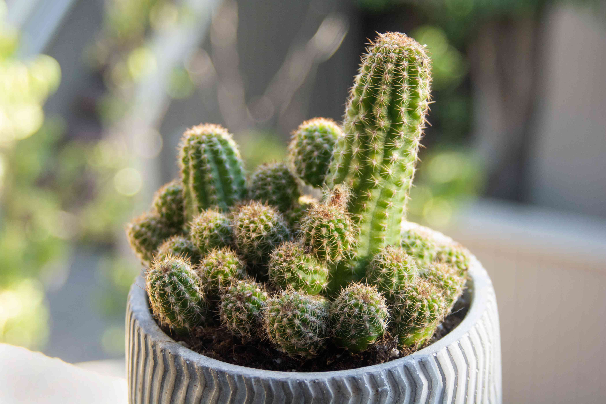
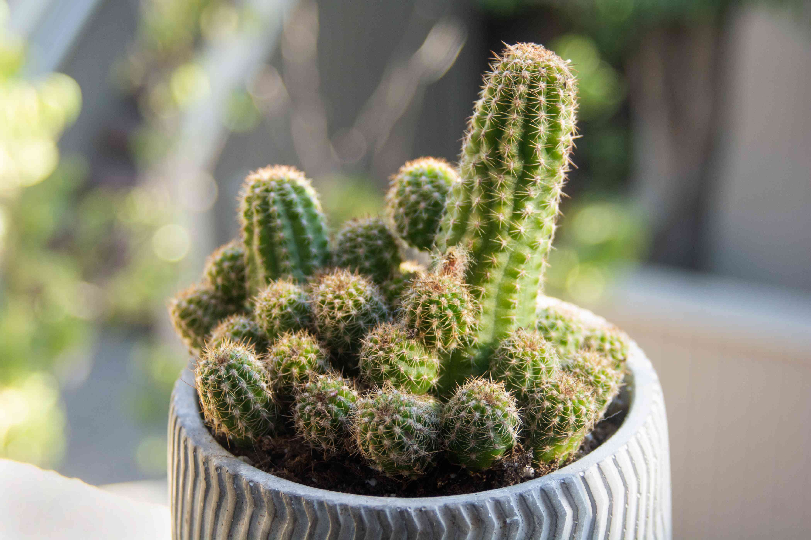
Philodendrons are a beloved and diverse group of tropical plants known for their lush foliage and ease of care. These low-maintenance houseplants come in various shapes and sizes,
making them a popular choice among indoor gardeners. With their glossy, heart-shaped leaves and trailing vines, philodendrons add a touch of greenery and elegance to any interior
space. While they thrive in indirect light, they can adapt to a variety of lighting conditions, making them suitable for both experienced and novice plant enthusiasts. Philodendrons are
not only aesthetically pleasing but also excellent air purifiers, helping to improve indoor air quality by removing pollutants. Their adaptability, combined with their striking appearance,
has cemented their place as a staple in indoor gardening, bringing a touch of the tropics into homes and offices around the world.
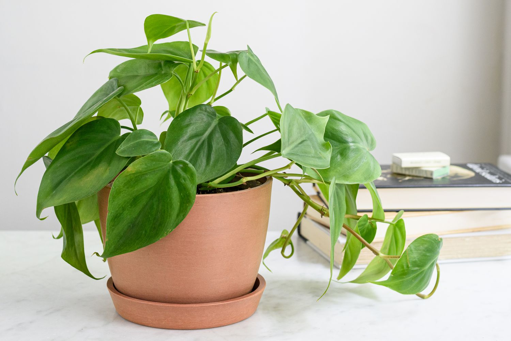 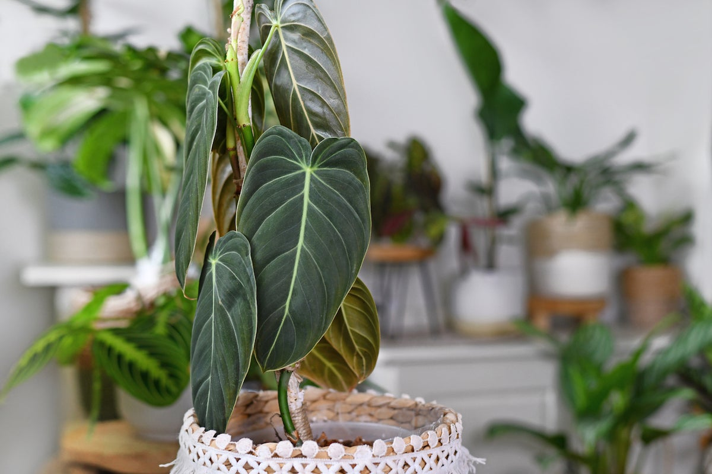 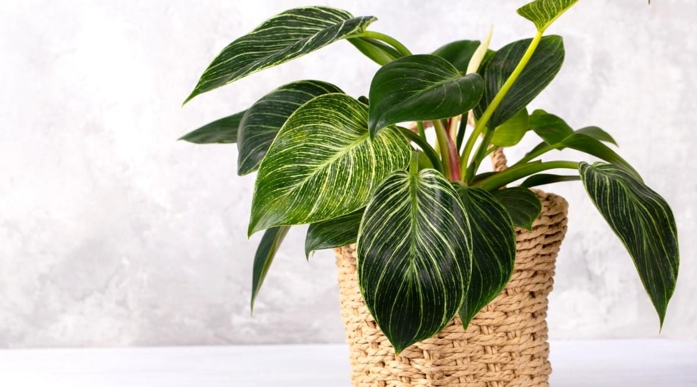Salvia, a diverse and widespread genus of flowering plants, encompasses over 900 species, ranging from culinary herbs to ornamental garden favorites. One of the most well-known
species is Salvia officinalis, commonly known as common sage, which is celebrated for its culinary uses in flavoring dishes. Many other Salvia species, with their colorful and aromatic
blooms, are cherished by gardeners for their ornamental value, attracting pollinators like bees and butterflies. The genus Salvia is known for its wide range of uses, from medicinal
applications to spiritual rituals in some cultures. With their captivating colors and diverse properties, Salvia plants continue to be a source of fascination and utility in the world of
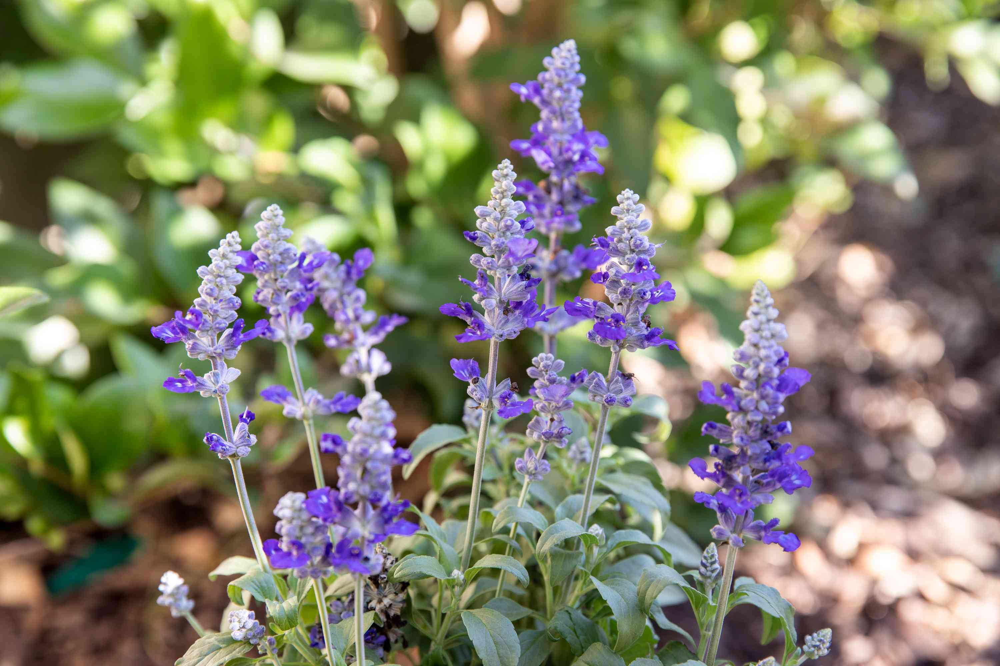 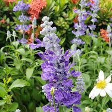 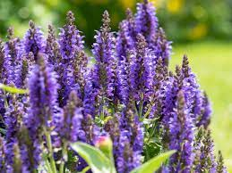botany and horticulture.
Orchids, often regarded as nature's masterpieces, are a diverse and enchanting group of flowering plants. With over 25,000 species and an array of hybrids, they boast an incredible
range of shapes, colors, and sizes, making them one of the most captivating and sought-after flowers in the world. Orchids are renowned for their intricate and often exotic-looking
blooms, characterized by a unique reproductive structure that sets them apart in the plant kingdom. These resilient plants can be found in nearly every corner of the globe, from
tropical rainforests to arid deserts, adapting to various climates and ecosystems. Orchids hold a special place in human culture and symbolism, representing love, beauty, and
refinement. Their popularity in horticulture and the orchid trade has led to a dedicated community of enthusiasts and collectors, further fueling the fascination with these
extraordinary plants.
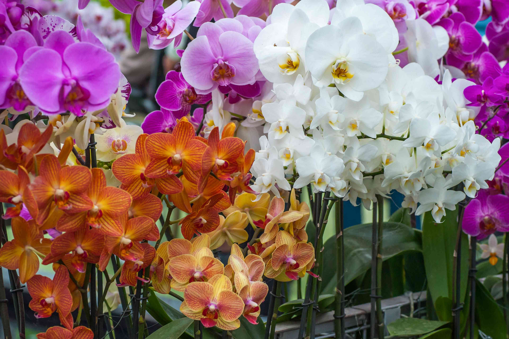 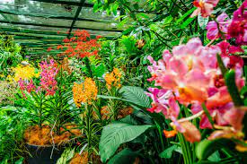
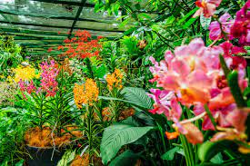